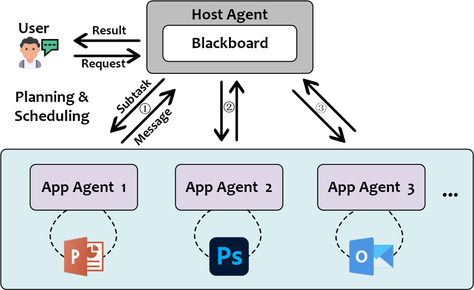
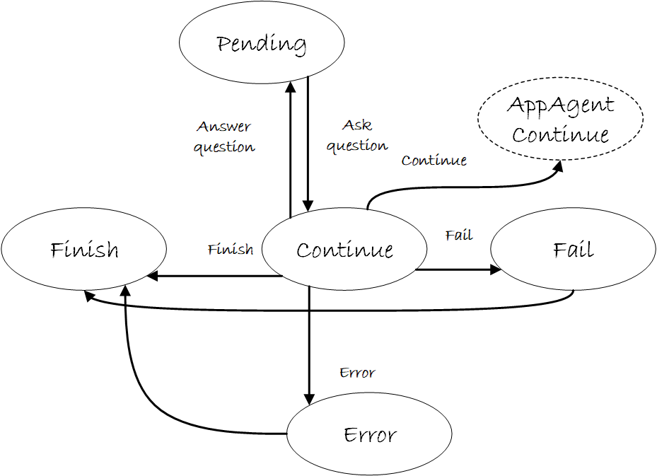
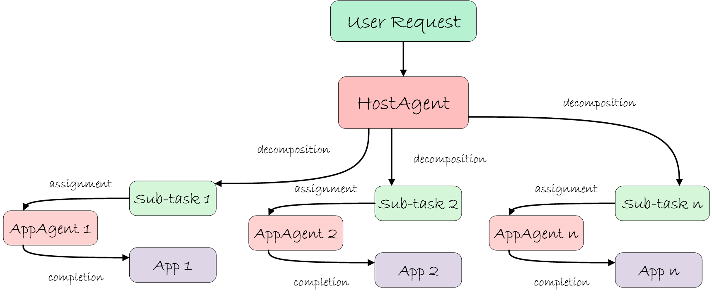

HostAgent 🤖
The HostAgent assumes three primary responsibilities:
- User Engagement: The
HostAgentengages with the user to understand their request and analyze their intent. It also conversates with the user to gather additional information when necessary. - AppAgent Management: The
HostAgentmanages the creation and registration ofAppAgentsto fulfill the user's request. It also orchestrates the interaction between theAppAgentsand the application. - Task Management: The
HostAgentanalyzes the user's request, to decompose it into sub-tasks and distribute them among theAppAgents. It also manages the scheduling, orchestration, coordination, and monitoring of theAppAgentsto ensure the successful completion of the user's request. - Communication: The
HostAgentcommunicates with theAppAgentsto exchange information. It also manages theBlackboardto store and share information among the agents, as shown below:

The HostAgent activates its Processor to process the user's request and decompose it into sub-tasks. Each sub-task is then assigned to an AppAgent for execution. The HostAgent monitors the progress of the AppAgents and ensures the successful completion of the user's request.
HostAgent Input
The HostAgent receives the following inputs:
| Input | Description | Type |
|---|---|---|
| User Request | The user's request in natural language. | String |
| Application Information | Information about the existing active applications. | List of Strings |
| Desktop Screenshots | Screenshots of the desktop to provide context to the HostAgent. |
Image |
| Previous Sub-Tasks | The previous sub-tasks and their completion status. | List of Strings |
| Previous Plan | The previous plan for the following sub-tasks. | List of Strings |
| Blackboard | The shared memory space for storing and sharing information among the agents. | Dictionary |
By processing these inputs, the HostAgent determines the appropriate application to fulfill the user's request and orchestrates the AppAgents to execute the necessary actions.
HostAgent Output
With the inputs provided, the HostAgent generates the following outputs:
| Output | Description | Type |
|---|---|---|
| Observation | The observation of current desktop screenshots. | String |
| Thought | The logical reasoning process of the HostAgent. |
String |
| Current Sub-Task | The current sub-task to be executed by the AppAgent. |
String |
| Message | The message to be sent to the AppAgent for the completion of the sub-task. |
String |
| ControlLabel | The index of the selected application to execute the sub-task. | String |
| ControlText | The name of the selected application to execute the sub-task. | String |
| Plan | The plan for the following sub-tasks after the current sub-task. | List of Strings |
| Status | The status of the agent, mapped to the AgentState. |
String |
| Comment | Additional comments or information provided to the user. | String |
| Questions | The questions to be asked to the user for additional information. | List of Strings |
| AppsToOpen | The application to be opened to execute the sub-task if it is not already open. | Dictionary |
Below is an example of the HostAgent output:
{
"Observation": "Desktop screenshot",
"Thought": "Logical reasoning process",
"Current Sub-Task": "Sub-task description",
"Message": "Message to AppAgent",
"ControlLabel": "Application index",
"ControlText": "Application name",
"Plan": ["Sub-task 1", "Sub-task 2"],
"Status": "AgentState",
"Comment": "Additional comments",
"Questions": ["Question 1", "Question 2"],
"AppsToOpen": {"APP": "powerpnt", "file_path": ""}
}
Info
The HostAgent output is formatted as a JSON object by LLMs and can be parsed by the json.loads method in Python.
HostAgent State
The HostAgent progresses through different states, as defined in the ufo/agents/states/host_agent_states.py module. The states include:
| State | Description |
|---|---|
CONTINUE |
The HostAgent is ready to process the user's request and emloy the Processor to decompose it into sub-tasks and assign them to the AppAgents. |
FINISH |
The overall task is completed, and the HostAgent is ready to return the results to the user. |
ERROR |
An error occurred during the processing of the user's request, and the HostAgent is unable to proceed. |
FAIL |
The HostAgent believes the task is unachievable and cannot proceed further. |
PENDING |
The HostAgent is waiting for additional information from the user to proceed. |
The state machine diagram for the HostAgent is shown below:

The HostAgent transitions between these states based on the user's request, the application information, and the progress of the AppAgents in executing the sub-tasks.
Task Decomposition
Upon receiving the user's request, the HostAgent decomposes it into sub-tasks and assigns each sub-task to an AppAgent for execution. The HostAgent determines the appropriate application to fulfill the user's request based on the application information and the user's request. It then orchestrates the AppAgents to execute the necessary actions to complete the sub-tasks. We show the task decomposition process in the following figure:

Creating and Registering AppAgents
When the HostAgent determines the need for a new AppAgent to fulfill a sub-task, it creates an instance of the AppAgent and registers it with the HostAgent, by calling the create_subagent method:
def create_subagent(
self,
agent_type: str,
agent_name: str,
process_name: str,
app_root_name: str,
is_visual: bool,
main_prompt: str,
example_prompt: str,
api_prompt: str,
*args,
**kwargs,
) -> BasicAgent:
"""
Create an SubAgent hosted by the HostAgent.
:param agent_type: The type of the agent to create.
:param agent_name: The name of the SubAgent.
:param process_name: The process name of the app.
:param app_root_name: The root name of the app.
:param is_visual: The flag indicating whether the agent is visual or not.
:param main_prompt: The main prompt file path.
:param example_prompt: The example prompt file path.
:param api_prompt: The API prompt file path.
:return: The created SubAgent.
"""
app_agent = self.agent_factory.create_agent(
agent_type,
agent_name,
process_name,
app_root_name,
is_visual,
main_prompt,
example_prompt,
api_prompt,
*args,
**kwargs,
)
self.appagent_dict[agent_name] = app_agent
app_agent.host = self
self._active_appagent = app_agent
return app_agent
The HostAgent then assigns the sub-task to the AppAgent for execution and monitors its progress.
Reference
Bases: BasicAgent
The HostAgent class the manager of AppAgents.
Initialize the HostAgent. :name: The name of the agent.
| Parameters: |
|
|---|
Source code in agents/agent/host_agent.py
55 56 57 58 59 60 61 62 63 64 65 66 67 68 69 70 71 72 73 74 75 76 77 78 79 80 81 82 83 84 | |
blackboard
property
Get the blackboard.
status_manager: HostAgentStatus
property
Get the status manager.
sub_agent_amount: int
property
Get the amount of sub agents.
| Returns: |
|
|---|
app_file_manager(app_file_info)
Open the application or file for the user.
| Parameters: |
|
|---|
| Returns: |
|
|---|
Source code in agents/agent/host_agent.py
209 210 211 212 213 214 215 216 217 218 219 220 221 222 223 224 225 226 227 228 229 230 231 232 233 | |
create_subagent(agent_type, agent_name, process_name, app_root_name, is_visual, main_prompt, example_prompt, api_prompt, *args, **kwargs)
Create an SubAgent hosted by the HostAgent.
| Parameters: |
|
|---|
| Returns: |
|
|---|
Source code in agents/agent/host_agent.py
106 107 108 109 110 111 112 113 114 115 116 117 118 119 120 121 122 123 124 125 126 127 128 129 130 131 132 133 134 135 136 137 138 139 140 141 142 143 144 145 146 147 | |
get_active_appagent()
Get the active app agent.
| Returns: |
|
|---|
Source code in agents/agent/host_agent.py
157 158 159 160 161 162 | |
get_prompter(is_visual, main_prompt, example_prompt, api_prompt, allow_openapp=False)
Get the prompt for the agent.
| Parameters: |
|
|---|
| Returns: |
|
|---|
Source code in agents/agent/host_agent.py
86 87 88 89 90 91 92 93 94 95 96 97 98 99 100 101 102 103 104 | |
message_constructor(image_list, os_info, plan, prev_subtask, request)
Construct the message.
| Parameters: |
|
|---|
| Returns: |
|
|---|
Source code in agents/agent/host_agent.py
171 172 173 174 175 176 177 178 179 180 181 182 183 184 185 186 187 188 189 190 191 192 193 194 195 196 197 198 199 200 201 202 203 204 205 206 207 | |
print_response(response_dict)
Print the response.
| Parameters: |
|
|---|
Source code in agents/agent/host_agent.py
250 251 252 253 254 255 256 257 258 259 260 261 262 263 264 265 266 267 268 269 270 271 272 273 274 275 276 277 278 279 280 281 282 283 284 285 286 287 288 289 290 291 292 293 294 | |
process(context)
Process the agent.
| Parameters: |
|
|---|
Source code in agents/agent/host_agent.py
235 236 237 238 239 240 241 242 | |
process_comfirmation()
TODO: Process the confirmation.
Source code in agents/agent/host_agent.py
244 245 246 247 248 | |